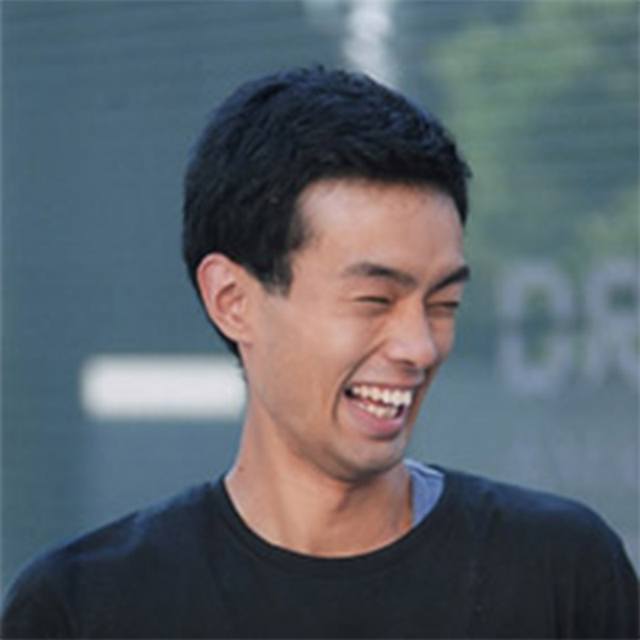

初めてとなるポピュラーカルチャー学部1期生の卒業制作展。「つくる」「届ける」
「考える」を柱とする本学部らしいものにしました。今回のコンセプトは
《港-Port》です。港が、様々な人や文化の混じり合う場所であるように、
単なる展示にとどまらず、様々なイベントと一体になって
学生の考える音楽、ファッションを
お届けいたします。
初めてとなるポピュラーカルチャー学部1期生の卒業制作展。「つくる」「届ける」 「考える」を柱とする本学部らしいものにしました。今回のコンセプトは 《港-Port》です。港が、様々な人や文化の混じり合う場所であるように、 単なる展示にとどまらず、様々なイベントと一体になって 学生の考える音楽、ファッションを お届けいたします。
EVENTS
（定員200名）
＊THE PORT TALKは、ポピュラーカルチャー学部が”今”だからこそ伝えたいことを、音楽・ファッションに精通する多彩なゲストにお聞きする、公開トークイベントです。
-
藤原ヒロシ×山崎二郎
藤原ヒロシ
京都精華大学ポピュラーカルチャー学部客員教授。1964年、三重県生まれ。fragment design主宰。80年代からDJとして活動し、ヒップホップ、クラブミュージックを中心に自らもステージに立つ傍ら、UAなど人気アーティストのプロデュースも手がける。現在、音楽プロデューサー、アーティスト、ファッションデザイナーなど多方面で独自の活動を続けている。半生を描いた書籍に、『丘の上のパンク 時代をエディットする男・藤原ヒロシ半生記』（川勝正幸・著）がある。
山崎二郎
京都精華大学ポピュラーカルチャー学部講師。1965年、埼玉県生まれ。89年明治学院大学社会学部卒業。出版社・ブラウンズブックス代表。カルチャー『BARFOUT!(バァフアウト!)』(93年)、ベースボール『ボールパーク』(99年)、挑戦し続ける大人たちへをテーマの『ステッピンアウト』(08年)を創刊&編集長。DJ、選曲家として、コンピレーション・アルバム『middle & mellow』シリーズをトータルプロデュース。
2月15日（水）17:00〜
ギャラリーフロール「12×12 ART×MUSIC – contemporary art meets music on 12inch square -」展関連企画
-
増田セバスチャン×学生
増田セバスチャン
アーティスト／アートディレクター。演劇・現代美術の世界で活動した後、1995年にショップ「6%DOKIDOKI」を原宿にオープン。きゃりーぱみゅぱみゅ「PONPONPON」MV美術、「KAWAII MONSTER CAFE」のプロデュースなど、原宿のKawaii文化をコンテクストに作品を制作。現在、2020年に向けたアートプロジェクト「TIME AFTER TIME CAPSULE」を展開中。
2月16日（木）17:00〜
＊THE PORT LIVEは、ポピュラーカルチャー学部の多彩な教員陣や学生によるライブ＆DJイベントです。
2月18日(土)17:30〜
15日10時〜当日正午 卒展受付で整理券を配布します
-
松前公高
松前公高
京都精華大学ポピュラーカルチャー学部音講師。87年にアルファレコードより「EXPO」でデビュー。数々のレコーディング、ライブにキーボーディストとして参加。セガのゲームミュージックバンドS.S.T.BANDのメンバーとして多くのアルバムを発表。 94年に1stアルバム『Space Ranch』（TRANSONIC RECORDS)をリリース。99年「スペースポンチ」としてアルバムをリリース。現在はアニメーターうるまでるび氏とのコラボレーション「おしりかじり虫」ほか、電動スクーター「パッソル」サウンド開発や神戸空港出発ロビー｢アースクロック｣時報音など幅広く制作を続けている。 -
AOKI takamasa
AOKI takamasa
京都精華大学ポピュラーカルチャー学部講師。1stアルバム「SILICOM」以来、音楽表現の枠組みを押し拡げる気鋭のアーティスト。2004～11年はヨーロッパを拠点に制作活動。2011年に帰国し、現在は大阪在住。これまでにPROGRESSIVE FOrM、op.disc、fatcat、raster-noton、commmons等、国内外のレーベルからのソロ作品や、過去には高木正勝とのユニットSILICOM、Tujiko Norikoとの共作アルバムもリリース。坂本龍一、半野喜弘、サカナクション等のリミックスやエンジニアとしてACO、BUN / Fumitake Tamuraらのミックスも手掛けている。写真家としても精力的に活動中。2013年よりグラフィックデザイナーMAAとのハイブリッドデザインプロジェクト 『A.M.』を始動。
-
高野寛 & 屋敷豪太 & Bose
高野寛
京都精華大学ポピュラーカルチャー学部特任教授。1988年にシンガーソングライターとしてアルバム「hullo hulloa」でデビュー。代表曲は「虹の都へ」「ベステンダンク」など。最新作はリオデジャネイロで録音された「TRIO」(2014年)。ギタリストとして、高橋幸宏、坂本龍一、細野晴臣をはじめ、宮沢和史、TEI TOWA、クラムボン、星野源などのライブやCDに参加。小泉今日子、ムーンライダーズ、ゴスペラーズ、Flying Kidsなどの作品にサウンドプロデューサーとして参加。
屋敷豪太
ミュート・ビート、メロンでの活動を経て1988年渡英。プログラミングでソウル・II・ソウルに参加。”グラウンド・ビート”の創始者として世界的認知を得る。1991年、シンプリー・レッドに加入。その他デペッシュ・モード、ビョークのリミックスやマッシヴ・アタックのプログラミング・アレンジなど担当。近年、日本国内でも活動し、NHK『プロフェッショナル 仕事の流儀』テーマ曲やCX『新堂本兄弟』では堂本ブラザーズバンドのドラマーとしてお茶の間にも認知される。
Bose
スチャダラパーのMC担当。1990年にアルバム『スチャダラ大作戦』でデビュー。以来ヒップホップ最前線でフレッシュな名曲を日夜作り続けている。個人活動としては、テレビ・ラジオ・CM出演、ナレーション、執筆、ゲーマーなど、幅広いジャンルで活動中。デビュー20周年にベストアルバム『THE BEST OF スチャダラパー 1990～2010』をリリース。デビュー25周年となる2015年には通算12枚目となるアルバム『1212』をリリースしている。
2月19日（日）17:30〜
港と音楽について、3人で語り合います
-
若尾裕 & 荏開津広 & 安田昌弘
若尾裕
広島大学名誉教授及び神戸大学名誉特任教授。東京芸術大学大学院音楽研究科作曲専攻修了。現在を西洋の支配してきた近代以後の音楽体制が次の時代へと変遷する時代ととらえ、ポスト西洋音楽の新しい音楽の創成を研究、実践両面でテーマとしている。著書に『親のための新しい音楽の教科書』（サボテン書房2014）など。訳書にP. ヘガティ『ノイズ／ミュージック』（みすず書房2014）など。CDに『千変万歌』（ジョエル・レアンドルとの共演、メゾスティクス2002）など。
荏開津広
90年代初頭よりDJ開始、以後執筆／翻訳／選曲など主にストリート・カルチャーの領域において国内外で活動。主なエッセイ”Attempt To Reconfigure ‘Post Graffiti’”(2010)、”Art As Punk”(リヨン現代美術館,2012)、翻訳『サウンド・アート』（木幡和枝、西原尚を共訳、フィルムアート社、2010）。ポンピドゥー・センター映像祭オール・ピスト京都 プログラム・ディレクター。
安田昌弘
京都精華大学ポピュラーカルチャー学部教授。英レスター大学マスコミ研究所（CMCR）で日仏音楽産業の研究を行いPh.D.取得。現在は関西、特に京都の音楽シーンについてフィールドワークやフランスにおける日本のポピュラーカルチャー受容の研究を行っている。論文に「京都とブルースはどう結びついているか」、訳書に『ポピュラー音楽理論入門』『ポピュラー音楽をつくる』、共著に『ポピュラー音楽へのまなざし』『The International Recording Industies』など。
卒展のフィナーレは学生たちの演奏をお楽しみください
-
小林由季
小林由季
京都精華大学ポピュラーカルチャー学部音楽コース４回生。卒業制作にて、ウクレレと自然音を使用したアルバムを制作。今回のライブでは、そのアルバム楽曲を、コラボレーションにてお届けします。共演者 Pf.落晃子（ポピュラーカルチャー学部音楽コース特任准教授)/SUKIDARAKE MAFIA（5人組のマフィア兼バンド。2014年結集）/Vo.山本夢（音楽コース４回生）/Vo.山田かれん(音楽コース４回生）/Gt.兒玉七音(音楽コース４回生） -
Close Bom Girls
クローズ・ボム・ガールズ
京都精華大学ポピュラー学部で誕生したDr&Voシオリ、Gt&Voリサコの2人による超プリティーなガールズバンド、クローズボムガールズ！shampoo.mourn.frankiecosmosなど海外のバンドに影響をうけ作詞作曲。力強いサウンドで女の子の今にも爆発しそうな気持ちを歌います！現在1stアルバム発売中！
-
The Listener’s Port
THE LISTENERS’ PORTは、ミュージシャン、編集者、学者など、幅広い分野でご活躍されている音楽好きの方々に、ポピュラーカルチャー学部卒業制作展のために選んでいただいたプレイリストを会場で再生するDJイベントです。
-
The Port Market
THE PORT MARKETは、港の市場をイメージしたマーケットで、様々な販売店と飲食店が建ち並びます。また、弾き語り等を始めとするイベントブースも設置されます。
EXHIBITORS
初めてとなるポピュラーカルチャー学部1期生の卒業制作展。「つくる」「届ける」「考える」を柱とする本学部らしいものにしました。今回のコンセプトは《港-Port》です。港が、様々な人や文化の混じり合う場所であるように、単なる展示にとどまらず、様々なイベントと一体になって学生の考える音楽、ファッションをお届けいたします。
友愛館 3F
-
衣服制作
石田 恵
服地の為の魅力的な図案提案
-
衣服制作
小西 美玖
体型カバーを目的とした服作り
-
衣服制作
仲西 瑛美
『100万回生きたねこ』から感じられる感動を考慮したスタイリングBOX
-
衣服制作
平野 葉
一人の女性として強く生きるための服
-
衣服制作
廣内 翔真
身体的、また精神的充足感を生む長く愛される服作り
-
ブランディング
大友 芙美香
一人ひとりに寄り添うウェディングブランド
-
ブランディング
近藤 怜
RICOD2017春夏コレクション1994⇄2024
-
ブランディング
積山 慈未
イメージによるファッションの提案方法
-
コーディネート
中川 有貴
女性たちへのボディコーディネート 〜美しさをもとめて
-
楽曲制作
梶 正樹
dot par inch
-
楽曲制作
吉田 周平
N（仮）
-
メディアミックス
Musicae Fragmentum
KARAOTO
森の中の箱庭
-
卒業論文
熊沢 紗世
恋愛ソングの歌詞分析〜流行化に登場する男女と、現代の若者の恋愛観は結びつくのか
-
卒業論文
崎中 拓也
喫茶店からカフェへ
-
卒業論文
中村 太郎
日本語ラップは本当に流行っているのか
-
イベント
松尾 湧佑
Little Free CD Libraryの開設・運営
友愛館 2F
-
衣服制作
貴舩 寛太
Roochoo Gumbo
-
メディアミックス
河野 星香
私＝京都とX（音楽）で構成されている
友愛館 1F
-
メディア
松吉 美紀
«CIERVO»
-
メディア
河野 寿起
京都のケ〜京都のファッションはどこにあるのか
-
メディア
寺元 志帆
自由の不自由
-
メディア
山口 詩織
読まない人間による雑誌情報雑誌
-
メディア
秀 紗由佳
シゴト・モノ・ヒトの魅力を伝えるZINE『Unison』
-
メディア
山本 夢
Dream Challenge〜心と体をつなぐ健康の建築
-
イベント
獅子堂 聡美
私の宝箱
-
イベント
米田 真理子
いとへんぷろじぇくと 〜気になるあの人の生き様に触れたい
-
イベント
古田 縁
出会いの『きっかけ』を作るパーティーのプランニング
-
衣服制作
立花 音々
服の中に本
-
衣服制作
松田 万里歩
しゃちとくまとシャチクマと私
-
メディアミックス
北川 雄規
パンクカルチャーの原点と構成するもの
-
楽曲制作
小林 由季
音楽に出会えたこと。そして、キミに出会えたこと。
友愛館 B1F
-
メディア
兒玉 七音
Webサイト「街音（machi-oto）」の制作
-
楽曲制作
髙橋 海斗
覚え歌、百人一首の制作
-
楽曲制作
新木 理砂子
クロースボムガールズのアルバム
-
楽曲制作
中川 栞
クロースボムガールズの活動を行って
-
楽曲制作
IMADEGAWA
服部 敦
IMADEGAWAによる「音で感じる情景と季節」
-
楽曲制作
槇本 欽優
幻想と空想と遊び心
-
楽曲制作
松原 彩香
Labyrinth
-
楽曲制作
安平 倫
メモリーズ
-
イベント
有元 雅
知る展
-
メディアミックス
田坂 道教
映像と音楽による小説ドラマ作品制作
友愛館 B2F
-
楽曲制作
上野 裕美子
roar
-
楽曲制作
木原 陸斗
Club MusicとAmbient Musicの制作
-
楽曲制作
提坂 智之
Mountain
-
楽曲制作
清水 晶乃
日々、
-
楽曲制作
山田 かれん
IN THE WATER
-
イベント
岩﨑 丈
音楽の世界を広げる3ヶ月連続イベント「Sound Labo 《BLAST!》」開催
-
メディアミックス
片山 來門
70年代ドイツの電子音楽をつけたサイレント映画のような実験映像
-
メディアミックス
澤田 啓亮
バルーミン〜映像とサウンドと人の動きを合わせるインスタレーション
-
レコーディング
田中 頌一郎
ダイナミックマイクとコンデンサマイクでレコーディングを行った時の音の違いについて
-
レコーディング
内藤 遼
低音塾
-
楽器制作
福島 翔
翔Drum Project〜Self Produceへの道のり 卒業編